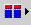

Use this window to issue SQL commands to configure the ObjectServer.
| Button | Description |
|---|---|
Click this
button to select an SQL command from the pop-up menu. Based on the
command that you select, complete the resulting window as follows:
|
|
 |
Click this button to select a table column name to add to the command. The column name is substituted for the corresponding event list row value when the tool runs. When prefaced with the @ symbol, the column name is substituted with the corresponding event list row value during execution. This can be used in an SQL query or restriction filter, such as: RemoteNodeAlias = '@LocalNodeAlias' |
| Click this button to select from a list of available conversions. Double-click to add the conversion. | |
| Click this button to clear the entered SQL. | |
| Click this button to bring up a list of keywords that complete the entered SQL. | |
| Click this button to check the validity of the entered SQL syntax. | |
| Click this button to locate a file of type .sql or .ed and check the validity of its syntax. On completion, the results are displayed. (When you use an external editor to create or edit triggers and procedures, they are saved as .ed files.) | |
| Click this button to submit the SQL commands. |